Overview
Device Guardian operation and functionality is based on the user role of the user logged in.
There are two methods for locating devices:
- Primary Method - This standard feature, available on all devices, uses the integrated Bluetooth radio to emit BLE beacons when the device is enrolled with the Device Tracker server and marked as lost, provided it is not in low battery or powered off. It leverages access point location, a Bluetooth-based visual proximity indicator, and a sound alert feature for effective tracking.
- Secondary Method - An optional feature for select devices equipped with a secondary Bluetooth Low Energy (BLE) battery option. This enables the secondary BLE beacon in the battery pack to activate when the host device is in low battery or powered off, allowing for tracking for a limited time even when the battery is depleted.
To find a device using the primary method, the missing device must be marked for retrieval by the administrator or manager. The “finding” device (the device performing the search) is used to determine the distance the user is located in relation to the “missing” device (the device to be found) using the visual proximity meter. When a device is found, recommission the device to place it back into the active device pool. Alternatively, decommission the device if it needs to be removed from the active device pool.
The following options are available to facilitate device tracking:
- Use Automation to configure rules that trigger the workflow of finding lost mobile devices.
- A note can be added at any time to capture comments specific to the device (e.g. device screen damaged) to aid in tracking or identifying problems with the device. This feature is available only for administrators and managers.
An administrator dashboard and manager dashboard are accessible via the web portal to view devices, access points and sites and take action to track devices.
Licenses are required on the devices and may be transferred from one device to another or removed from a device.
Device Access
When the single sign-on (SSO) feature is activated and Identity Guardian is installed on a device, the sign-in procedure for users is determined by the authentication strategies set up by the administrator. These strategies can include single or multi-factor authentication methods like facial biometrics, barcode scanning or SSO. For more information, refer to the Identity Guardian documentation.
Mark Device To Find
When initiating the process to find a device, the missing device must first be set to the To Be Found state by the administrator or manager. The finding device, or the device performing the search, is used to determine the distance the user is located in relation to the “missing” device, or the device to be found. Location must be enabled on the finding device to perform the device search.
A device must be marked To Be Found before a device search can take place.
To mark a device "To Be Found":
- In the Missing tab, from the device list, tap Find device. 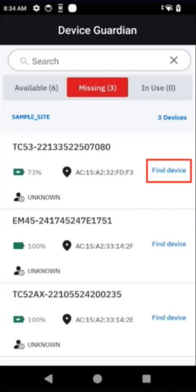
- The device status is changed to To Be Found and the device is now listed in the To Be Found category in the dashboard.
- To proceed to find the device, continue to the next section Find a Device.
Managers and administrators can alternatively mark a device To Be Found as follows:
- Open the device list.
- Tap on a device card.
- Tap Enable Finding.
 Manager/admin view to mark a device "To Be Found"
Manager/admin view to mark a device "To Be Found"
Lost Device Nearby
Lost Device Nearby is an optional feature (configured by the administrator) that proactively sends alert notifications to a device when a lost device is detected within close proximity. This allows the lost device to be found by nearby users in addition to any users that may be actively searching for the device. The nearby user that receives the alert notification can promptly initiate the finding process, expediting device recovery by allowing the lost device to be found more quickly with its vicinity immediately known. Alerts are sent as one or a combination of the following: audio, vibration, LED, and/or Android notification.
When the notification message appears on the detecting device, it includes the device model and device name of the lost device. Tap on the notification to start the finding process. If there are multiple lost devices detected nearby, a notification is received from each lost device. If the detecting device is online (internet is available), the Device Guardian Device Details screen appears and the user can start the finding process by tapping the Start Finding button. The user proceeds to find the lost device with the proximity indicator and play sound features.
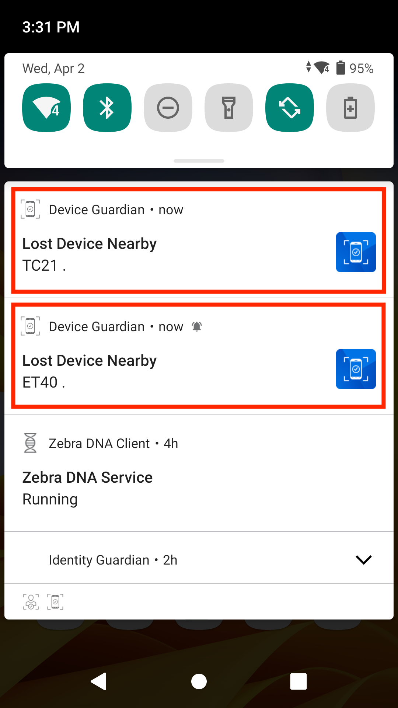
Notifications of lost devices nearby
Alert notifications are received even if the detecting device is offline, as seen in the notification message which displays "offline" status for the detecting device. In this case, tap on the notification to immediately start the finding process. The Device Guardian app appears for the user to find the lost device with the proximity indicator. The detecting device cannot mark the lost device as "Found" or "Cannot Find" until the detecting device is back online. However, this can be done in the web portal by the manager or administrator.

Notification received when detecting device is offline
When Lost Device Nearby is enabled, the Mobile Device screen displays a Nearby tab, which filters missing devices that are marked "To Be Found" and are receiving Bluetooth beacons while within nearby proximity.
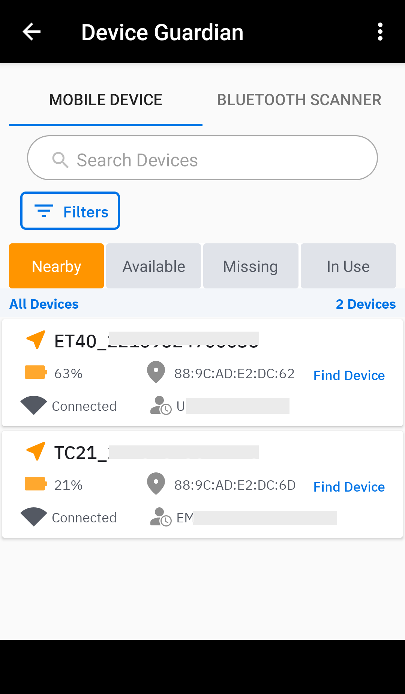
To Be Found - Nearby Devices
When the detecting device is offline (no internet connectivity), nearby devices can still be detected from the BLE beacons received. The nearby device is displayed as "Unknown" along with its beacon ID:

Offline detecting device displaying nearby devices
The detecting device receives Lost Device Nearby notifications when all the following requirements are met:
- The device must be in the "In Service" state.
- The device must neither be charging nor in a low battery state (based on the Low battery threshold).
Note: Any Lost Device Nearby notifications are removed when Bluetooth beacons are no longer detected from the lost device for at least 5 minutes. This is due to the lost device no longer: (1) located within close proximity of the detecting device, (2) emitting Bluetooth beacons, or (3) in the "To Be Found" state.
Find Device
To locate a device, initiate a search from the Missing device list. Associates can access this list upon starting the client app, while administrators or managers can view it via the dashboard.
Search process:
Initiate the device search: In the Missing tab screen, tap Find device for the selected device. 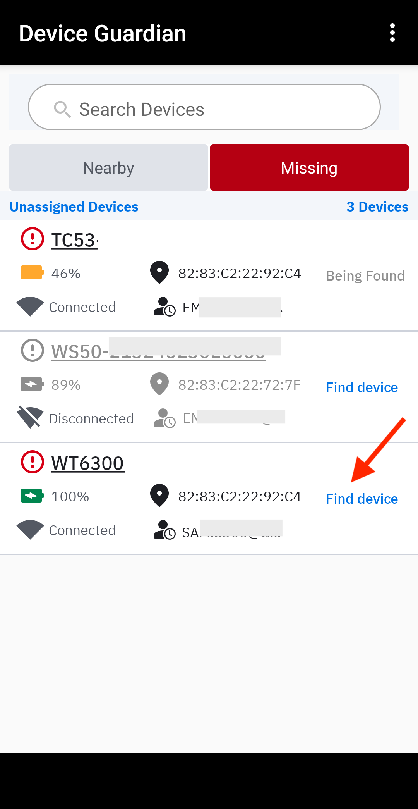
Locate the access point (AP): The device state changes to Being Found and the BLE proximity meter appears, showing the access point the device is connected to. Move towards the AP to approach the general area of the missing device.
Use the proximity meter: The proximity meter indicates the how far or how close you are to the missing device. The numerical value decreases towards "0" as you get closer. Proximity meter state changes include:
- Red circle with red numbers - The finding device is moving away from the missing device.
- Blue circle with black numbers - The finding device is stationary.
- Blue circle with green numbers - The finding device is moving closer to the missing device.
- Green circle with green numbers - The finding device is close enough to hear the audio alert (numerical value is 3.0 or below).
- Gray circle at bottom of meter - The finding device is out of range of the missing device.
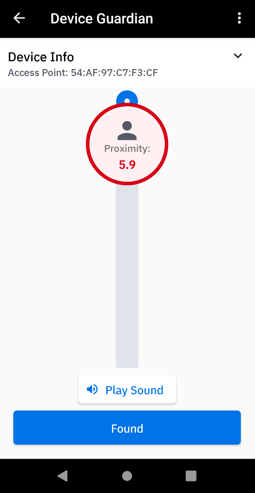 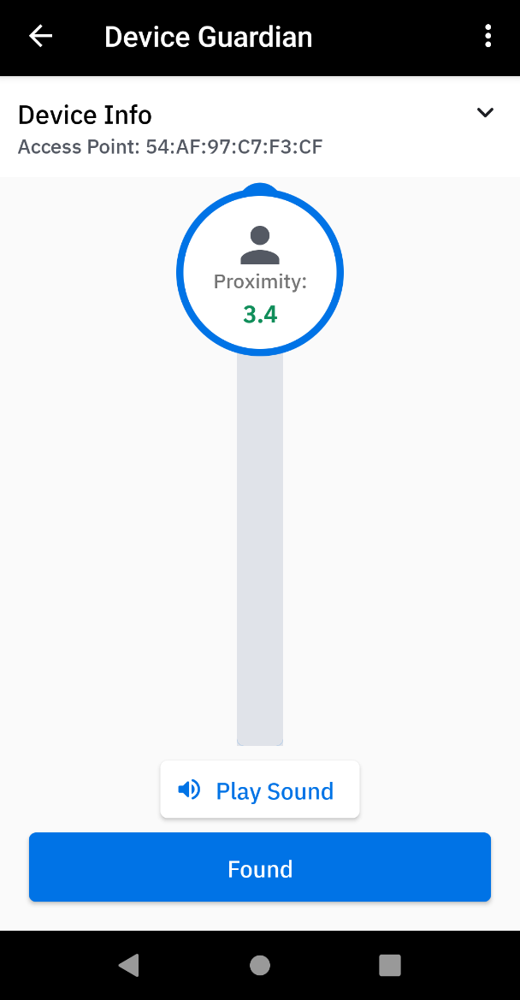 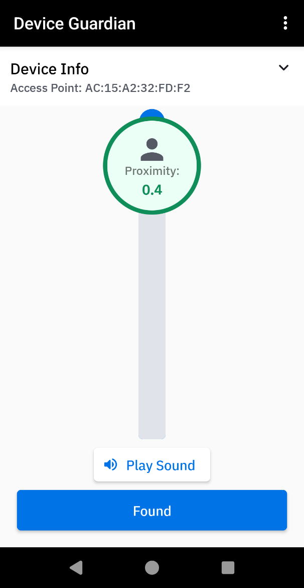 Moving further away from the missing device Moving closer to the missing device Missing device is close by
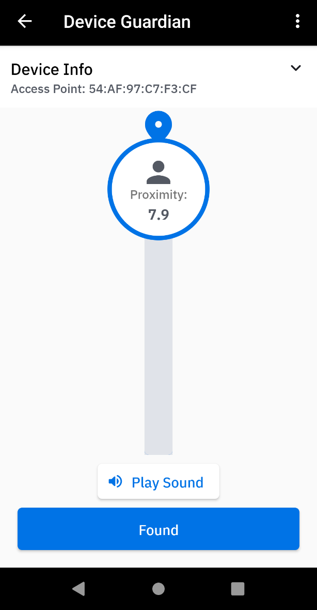 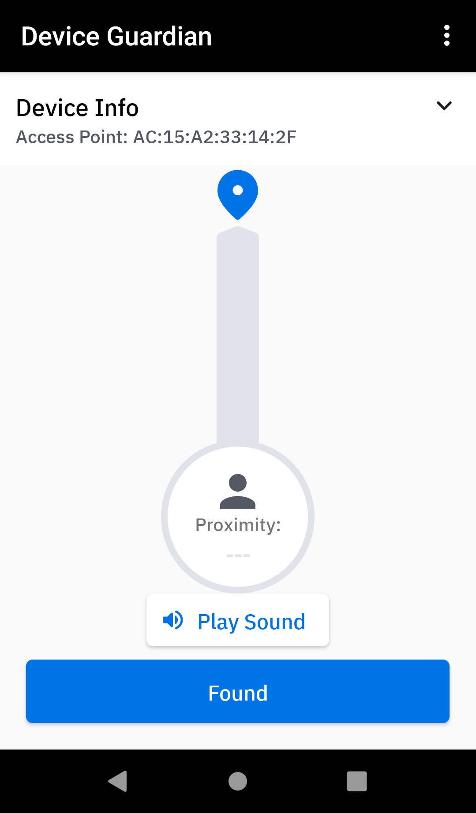 Finding device is stationary Finding device is out of range
Pinpoint location: To further narrow down the device’s location, tap Play Sound on the finding device and listen for the audio alert from the missing device. Walk towards the sound to locate the device.
If the missing device is found, tap Found. Select one of the following based on the behavior encountered:
The device is changed to the Found state if no automation rules are configured.
If Automation rules are configured with option Automatically Mark Devices "To Be Found" enabled, a message appears prompting the user to take action based on the rule(s) selected and to check each checkbox after action is taken. It is important to execute ALL actions specified, otherwise the device will return back to the To Be Found state after it is marked Found based on the automation process. After all action is taken and all checkboxes are checked, tap Confirm. The device state is changed to Found if automation option Automatically place device "In Service" when marked "Found" is disabled. If this option is enabled, the device state is changed to In Service. 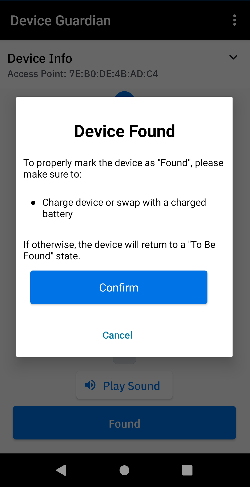
Sample screen of action to take after device is found
If the device is found and the automation option Automatically Place Device "In Service" When Marked "Found" is disabled, manually recommission the device to place it back into the active device pool. Alternatively, decommission the device if it needs to be removed from the active device pool.
If the device is not found, tap Cannot Find. The device state is changed to Cannot Find.
Notes:
- By default, the Pixie Dust tone is used when the audio alert is played on the device.
- Play Sound is also useful if the proximity meter is not operational (e.g. Bluetooth is disabled). Audio alerts can be played during the search process even if the lost device is in Do Not Disturb (DND) mode, with exceptions.
- Device Guardian can locate devices even when if they lose battery power or are turned off, provided the device has a secondary BLE.
- Administrators and managers can add notes to capture comments specific to the device, such as hardware damage or reasons for decommissioning.
Behavior when locating a missing device in different scenarios:
- If Bluetooth is turned off on a missing device that is powered-on and a user initiates locating that device, Device Guardian automatically turns on Bluetooth in the missing device to allow that device to be located using the proximity indicator. However, if the missing device is disconnected from the server, Bluetooth will not be turned on.
- If Bluetooth is turned off on the missing device while it is being found, that device cannot be located using the proximity indicator. However, if the device is powered off, it can still be located using secondary BLE (if supported).
- A device is in the Disconnected state when it does not communicate with the server for approximately 12 minutes. During this time, if a device search is performed on a missing device that has lost connection with the server, that device cannot be located using the proximity indicator and any attempt to Play Sound is ineffective since audio cannot be emitted from the disconnected device.
- If a finding device initiates a device search prior to the missing device becoming Disconnected, the missing device can be found using the proximity indicator.
- If Bluetooth is turned off on the finding device while it is locating the missing device, the missing device cannot be located using the proximity indicator on that finding device.
- If Android Location Services is turned off on the finding device, it cannot locate the missing device using the proximity indicator.
Secondary BLE
For devices with secondary BLE beaconing capability, Device Guardian can locate the device if it loses battery power or is powered off. The location of the device is detected by signals transmitted from the secondary BLE beacon. Attempts to locate the device must occur soon after the device loses power, prior to loss of power from the secondary BLE beacon. The secondary BLE radio of some devices is located in the battery. Such devices are subject to the behavior described in battery-based BLE behavior.
When locating a device based on its secondary BLE beacon, the Play Sound feature is disabled during device search since it cannot function due to the loss of device power. The Secondary BLE state is viewed from the Device Details screen.
Usage Notes:
- Secondary BLE differs from the built-in device primary BLE used for device tracking, which cannot operate once the device loses power.
- While finding a device, the values seen in the BLE proximity indicator may differ when finding a device that is powered on (primary BLE) versus a device that is powered off (secondary BLE), particularly if the Reference RSSI is not specified for the battery-based secondary BLE. This is due to varying location and orientation of the secondary BLE antenna. During the finding process, the user should rely on the trend reflected in the BLE proximity meter to navigate to the missing device.
Demonstration on finding a device with a drained battery using secondary BLE
Play Sound
To find a device that is close by, play a sound on the lost or missing device through the Find Device process. Alternatively, managers and administrators can play sound from the web portal through the Actions menu from either the Mobile Devices dashboard or Device Details screen.
Note: When playing the sound, by design the Pixie Dust tone is played on the device.
To play sound through the Mobile Devices dashboard:
- Log into the web portal as a manager or administrator.
- Go to Dashboard > Mobile Devices.
- Tick the checkbox to select the desired device(s) to play sound.
- From the Actions dropdown, select Play Sound. 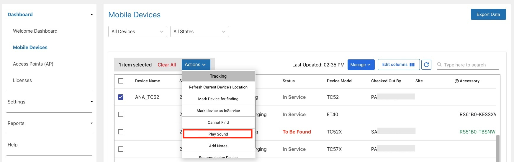
To play sound through the Device Details screen:
- Log into the web portal as a manager or administrator.
- Go to Dashboard > Mobile Devices.
- Click on the row of the desired device to play sound.
- The Device Details screen appears. From the Actions dropdown, select Play Sound. 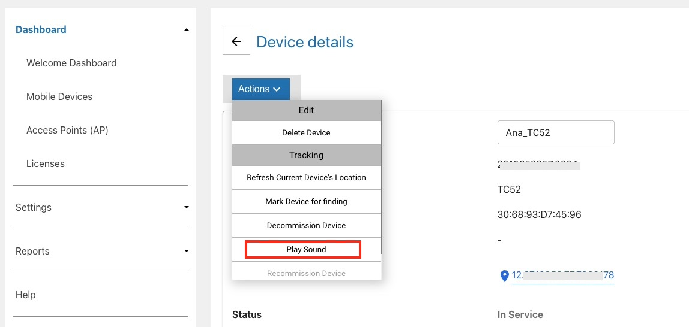
Do Not Disturb (DND) Mode
DND mode is an Android feature that silences the device - it mutes sound and stops vibration. Device Guardian has the capability to play audio alerts when DND mode is turned on in the lost device, with exceptions (see below).
Turn on DND mode by performing one of the following methods:
- Press the hardware volume +/- key (on the side of the device) then tap the Silent icon in the Zebra Volume Control UI to turn on silent mode.
- In Android Settings > Sound > Zebra Volume Control, tap the Silent icon in the Zebra Volume Control UI to turn on silent mode.
- In Android Quick Settings, tap the Do Not Disturb icon to turn on DND.
- In Android Quick Settings, tap the drop-down for the Do Not Disturb icon to select Alarms only.
- In Android Quick Settings, tap the drop-down for the Do Not Disturb icon to select Priority only.
- In Android Quick Settings, tap the drop-down for the Do Not Disturb icon to select Total silence.
- In Android Settings > Sound > Default notification sound, select Silent to set the default notification sound to silent. (This silences the device without DND mode.)
When DND is turned on based on the methods above, Device Guardian can play audio alerts in all cases except for the last two bullet points. In the last two cases, Device Guardian can no longer play a sound during the finding process in the following scenarios:
- When a user gains access to Android Quick Settings to completely silence the device (see the second to last bullet point above).
- When a user gains access to the Android Settings app and modifies the notification sound to silent mode (see the last bullet point above).
To ensure full operation of Device Guardian, Zebra recommends to restrict user access and prevent users from completely silencing a device by setting both of the following options:
- Disable access to Android Quick Settings > DND UI by using an EMM or Zebra MX UI Manager to enable/disable the DND feature.
- Disable access to Android Settings by using an EMM or Zebra Enterprise Home Screen.
Disable Finding
After a device is marked To Be Found, if the device search needs to be terminated follow these steps (applies to only managers and administrators):
- Open the device list.
- Tap on a device card.
- Tap Disable Finding.
Manager/admin view to disable finding
The device is removed from the To Be Found list and placed back In Service.
Bluetooth Scanners
When tracking is enabled for Bluetooth Scanners, two tabs are visible on the device screen:
- Mobile Device - Displays a list of mobile computers that have been marked To Be Found after being reported lost or missing
- Bluetooth Scanner - Displays the following:
- My Bluetooth Scanner - Shows the Bluetooth scanner(s) that is paired and connected to the host mobile computer. The following information is displayed: device friendly name, battery level, connection status (connected, disconnected), and MAC address. Only one Bluetooth scanner can be connected to the host at any given time. If there is no Bluetooth scanner paired with the mobile computer, no device is listed in this section.
- Other Bluetooth Scanners - Shows a list of Bluetooth scanners that have been marked To Be Found after being reported lost or missing

Bluetooth Scanners in Device Guardian client
Pair/Unpair Bluetooth Scanner
To pair and connect a Bluetooth scanner to the mobile computer:
- Launch Bluetooth Pairing Utility, pre-installed on the mobile computer by default. 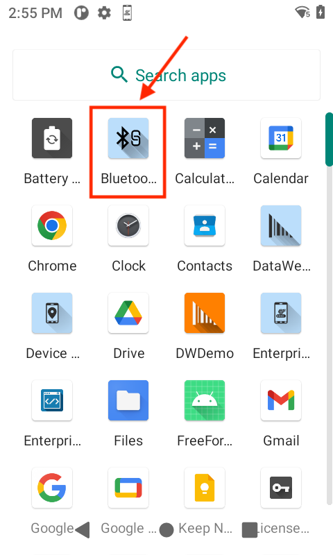
- Use the Bluetooth scanner accessory to scan the barcode displayed. 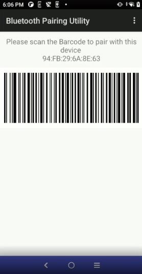
- Select whether to allow access to contacts and call history, and tap Pair in the confirmation message. 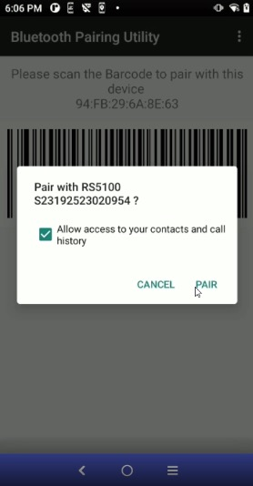
- In Device Guardian mobile app, tap the Bluetooth Scanner tab in the To Be Found screen. My Bluetooth Scanner displays the paired and connected Bluetooth scanner.

This procedure automatically registers the Bluetooth scanner to the Device Guardian system. If lost, it can be marked To Be Found to initiate the search.
To unpair the Bluetooth scanner, place it in a powered cradle. This automatically unpairs and disconnects the Bluetooth scanner from its associated mobile computer and removes it from the My Bluetooth Scanner section.
 Unpair Bluetooth scanner
Unpair Bluetooth scanner
Find Bluetooth Scanner
To find a Bluetooth Scanner:
On the device, open Device Guardian client. The To Be Found screen is displayed.

Tap on the device tile under My Bluetooth Scanner. The device details are listed along with the button to begin finding the device. 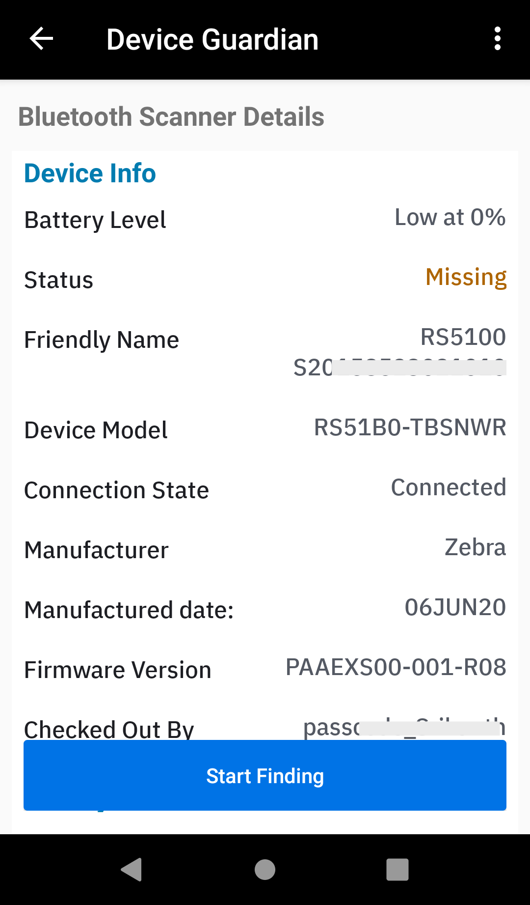
There are 3 different scenarios when finding a Bluetooth scanner:
Within Bluetooth range - To find a Bluetooth scanner within Bluetooth range, tap Start Finding button. The Bluetooth Scanner is placed in the To Be Found state and the proximity meter is displayed with the option to Play Sound.
 Note: When finding a mobile computer or Bluetooth scanner, the proximity values displayed may be different on each device even when they are in the same distance to the finding device.
Note: When finding a mobile computer or Bluetooth scanner, the proximity values displayed may be different on each device even when they are in the same distance to the finding device.Out of Bluetooth range - In the web portal, the When disconnected Beeaconing Rule must be enabled. To find a Bluetooth scanner out of range, under Other Bluetooth Scanners, tap on the device to find. The device details screen appears. When the device is moved within Bluetooth range, the proximity meter will appear and provide the ability to play a sound to locate the device.
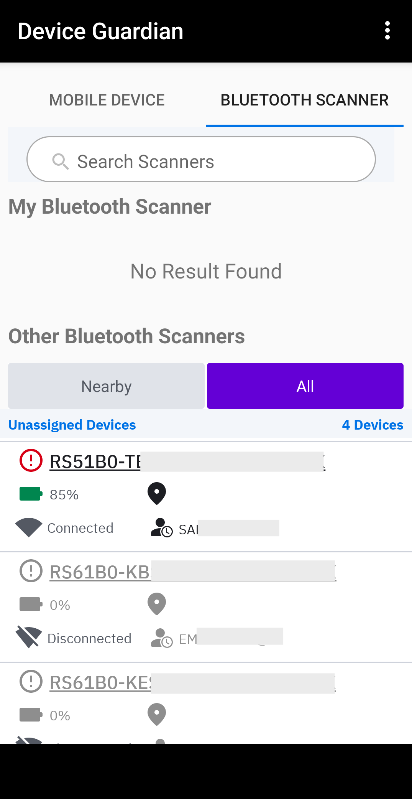 
Unpaired Bluetooth scanner Finding unpaired Bluetooth scanner that is out of range Located nearby - The Lost Devices Nearby notifications setting must be enabled in the web portal. When a Bluetooth scanner is set To Be Found and Bluetooth beaconing is enabled on the Bluetooth scanner, the Nearby tab in the To Be Found screen displays the Bluetooth scanners that are detected to be in close proximity to the mobile computer.

Virtual Tethering
Virtual Tethering notifies the user if a paired Bluetooth scanner is moving beyond the effective Bluetooth range from its associated mobile computer. A pop-up notification appears on the mobile computer indicating that the Bluetooth scanner is moving out of range. Supplemental notifications in the form of beeping, LED flashing, audio tone, and vibration can occur on the Bluetooth scanner and mobile computer. These alert options vary depending on the device. Virtual Tethering and its options are enabled in the Bluetooth Scanners setting from the web portal.
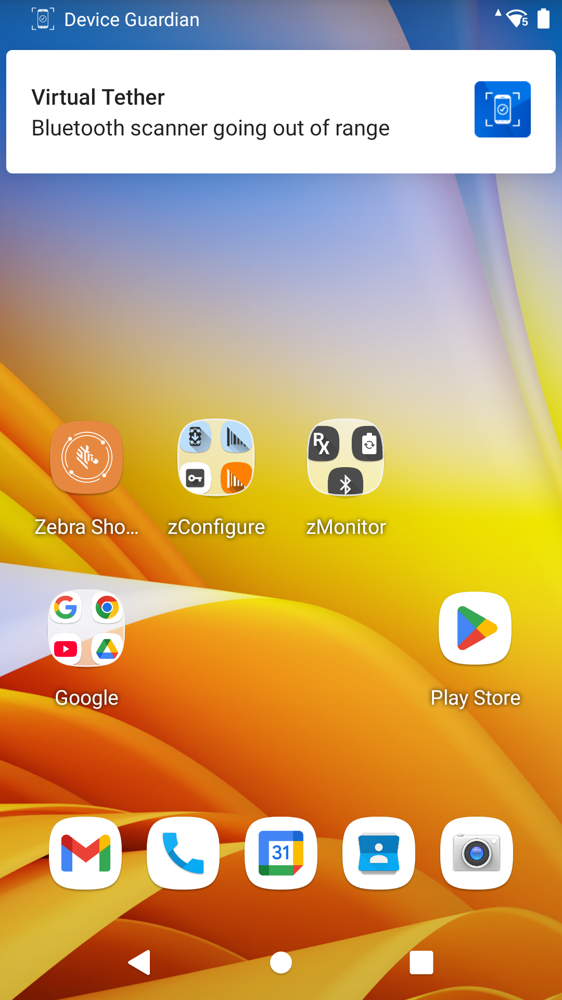
Virtual tethering pop-up notification
Decommission/Recommission Device
Decommission a device to remove it from the active device pool and recommission it to place it back into the active device pool.
Decommission a Device
When a device is no longer in use or needs to be removed from the active device pool, mark it as Decommissioned to prevent any further reporting to the server. This applies to situations when the device is being sent for repair, the device is being replaced, or the device is deprecated and needs to be removed. When a device is decommissioned, the license is automatically deallocated from the device and returned to the license pool for it to be reallocated to another device.
If a device is decommissioned by a manager, the device is removed from the assigned site and therefore no longer visible in the manager dashboard. The device can be recommissioned only by an administrator.
To decommission a device (admin/manager access required):
Perform one of the following procedures:
From the device list, tap and hold on the device card. Tap Decommission from the device action menu displayed. The Device Details screen appears.
Or,
If already in the Device Details screen, tap on the top right menu and select Decommission.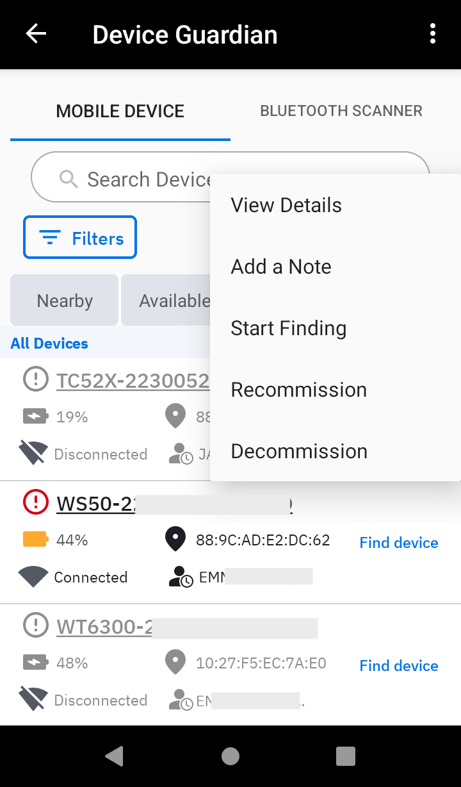 
Access Decommission from device card. Access Decommission from device details. The status is changed to Decommissioned and the user is prompted to enter a note.
If desired, add a note by entering text in the Note section to indicate the reason for the device decommission. See Add/Edit a Note section.
Tap back. The note is saved and the device is placed in the Decommissioned category in the dashboard.
Recommission a Device
Recommission a device after it is found or when it is previously Decommissioned and needs to be placed back into the active device pool (e.g. returned from repair). Recommissioning a device restarts the device status reporting to the server and can only be performed by an administrator.
When recommissioning a device, if a license is available it is automatically allocated to the device. If no license is available, the device remains in the decommissioned state and a note is automatically added indicating there is no license available. This note overwrites any pre-existing note. When a license is available, the admin or manager must recommission the device to allocate the license and manually delete the note.
Steps to recommission a device (administrator access required):
In the dashboard, scroll down and tap Decommissioned or Found to display the corresponding list of devices.
Perform one of the following procedures:
Tap and hold the device card and select Recommission.
Or,
Tap the device card to display the Device Details screen. Tap on the top right menu and select Recommission.

Access Recommission from device card. Access Recommission from device details. The Status is changed to In Service, as seen in the Device Details screen.
Tap the Note section to enter or edit text indicating the reason why the device is recommissioned.
Add/Edit Note
Administrators and managers can add a note to capture comments specific to the device to help in device tracking or identifying device problems. For example, a comment could be "device screen damaged".
To add or edit a note:
From the device list of any category accessed from the dashboard, tap and hold the device card and tap Add a Note. If a note already exists, the option is provided to Edit a Note.
The Note section appears in the Device Details screen prompting to enter in text. 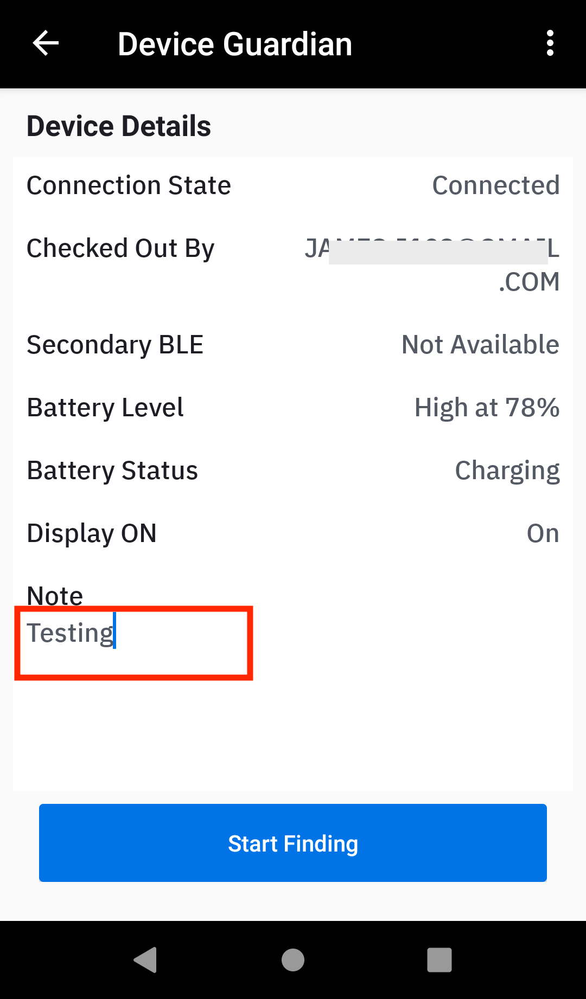Enter a note or comment
After entering text for the note, tap the back button.
The note is saved and can be viewed in the Device Details screen.
Notification Behavior
Device Guardian notifications differ significantly between Android versions prior to 14 and versions 14 and above.
For Android versions prior to 14
Users cannot dismiss notifications triggered by the Device Guardian app, including those received upon successful installation and enrollment.
For Android versions 14 and higher
Android 14 introduces updated guidelines on notification dismissibility, enhancing user control while maintaining necessary persistence. Key changes include:
- Users can dismiss foreground notifications that were previously non-dismissible.
- Notifications received after successful installation and enrollment of the Device Guardian app can now be dismissed or removed.
- Notifications that appear upon device reboot or when a new event is triggered can be dismissed.
 Device Guardian Notification
Device Guardian Notification